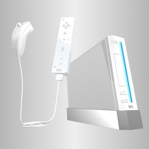

Wii
På Nintendos presskonferens under spelmässan E3 2005 visades konsolen upp,
men då helt utan några hårdvaruspecifikationer.
Konsolen gick initialt under arbetsnamnet Nintendo Revolution,
men den 27 april 2006 utannonserade Nintendo
att dess officiella namn därefter är ändrat till Wii.
Wii slog även försäljningsrekord i Europa som den snabbast säljande
konsolen vid lansering någonsin med sina cirka 325 000 sålda exemplar
under endast de två första dagarna maskinen funnits tillgänglig på marknaden.
Konsolen såldes
i 600 000 exemplar i Nordamerika under de första åtta dagarna
efter lanseringen och i Japan såldes det 400 000 exemplar av Wii under lanseringsdagen.
Olika Varianter
| Standard | Black Edition | Mini |
|---|---|---|
| Släppdes den 19/11/2006 | Släppted den 20/11/2009 | Släpptes den 15/3/2013 |
| Slutade tillverkas October 24, 2013 | Slutade tillverkas October 24, 2013 | Slutade tillverkas October 24, 2013 |
| 249.99$ | 199.99$ | 99.99$ |
Reklam
Populära spel
-
Wii Sports
-
Mario Kart Wii
-
Wii Sports Resort